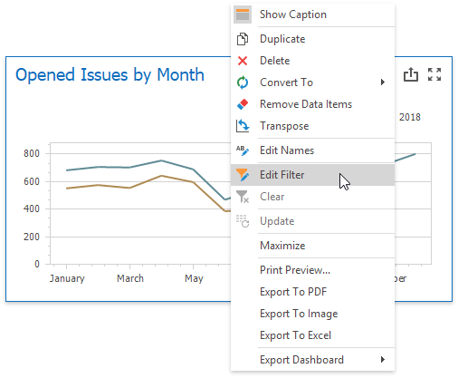
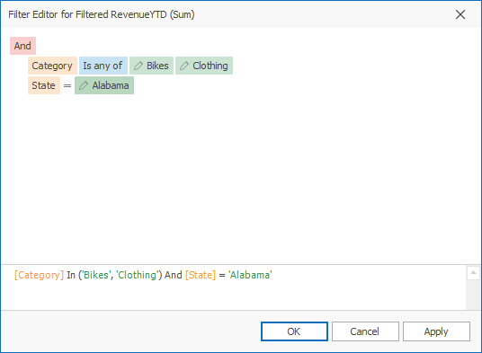

Filtering
The Dashboard Designer allows you to filter data in the dashboard items or apply filters to a specific measure. Dimensions and hidden dimensions are used to build filter criteria.
Dashboard Item Filter
Filters that apply to a dashboard item affect only this item. To add filters, select the target dashboard item and do one of the following:
Click the Edit Filter button in the Ribbon menu's Data tab.

Right-click a dashboard item and select Edit Filter from its context menu.

This invokes the Filter Editor dialog that allows you to build complex filter criteria:

Tip
Documentation: Filter Editor
To clear the applied filter, select Clear from the dashboard item's context menu or click the Clear button in the Data Ribbon tab.
Measure Filter
You can apply filters to individual measures. If you create multiple measures that only differ in applied filters, you can compare values calculated over different date-time periods or against different categories.
Select a dashboard item and right-click a measure to be filtered. Select Edit Filter from its context menu.

This invokes the Filter Editor dialog where you can specify filter criteria:

The filtered measure has the Filter icon:

To clear the applied filter, select Clear from the measure's context menu.
Note
The measure filter is technically an expression that uses the filter(summaryExpression, filterCriteria) function, where summaryExpression is the measure to be filtered and filterCriteria is the filter. See the following topic for more information about functions you can use in dashboard expressions: Expression Constants, Operators, and Functions.
The image below shows a Chart with three measures:
- 2019 - Opened is filtered by year 2019.
- 2020 - Opened is filtered by year 2020.
- Opened is the original measure without filters.

Visible Data Filter
You can specify a Visible Data Filter to limit displayed data. This filter type does not filter underlying data used in calculations or intermediate level aggregations.
Click the Set Visible Data Filter button in the Ribbon menu's Data tab to invoke the Visible Data Filter Editor, where you can set a filter condition:

For example, a Grid dashboard item has 35 rows and displays sales percentages.

The image below shows the difference between filters (the filter condition is the same):
- Dashboard Item Filter: sales percentages are recalculated based on the visible data.
- Visible Data Filter: sales percentages remain the same because this filter type does not affect calculations.

Pass Parameter Values
You can use the Filter Editor to filter a dashboard item according to the current parameter value. See the following topic for details: Pass Parameter Values.
OLAP Filtering Specifics
You cannot filter data by building complex filter criteria in OLAP mode. Instead, select the values you wish to include in or exclude from the dashboard to filter dimension attributes and hierarchies.
For dimension attributes, the Filter Editor contains a list of all values. You can select the values that you wish to display.

For hierarchies, a tree is displayed instead, allowing you to filter individual values at any hierarchy level.